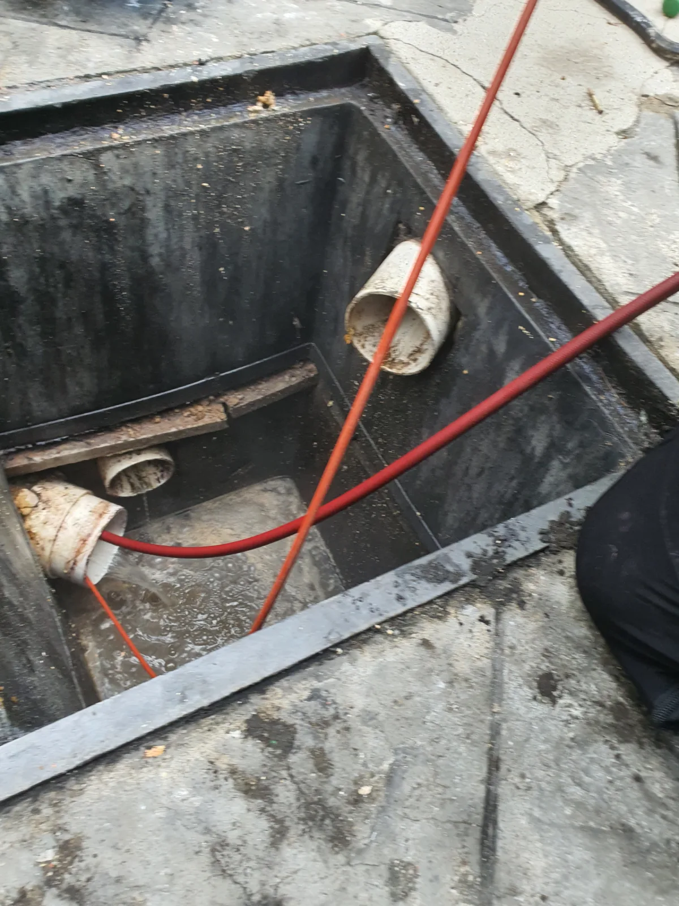
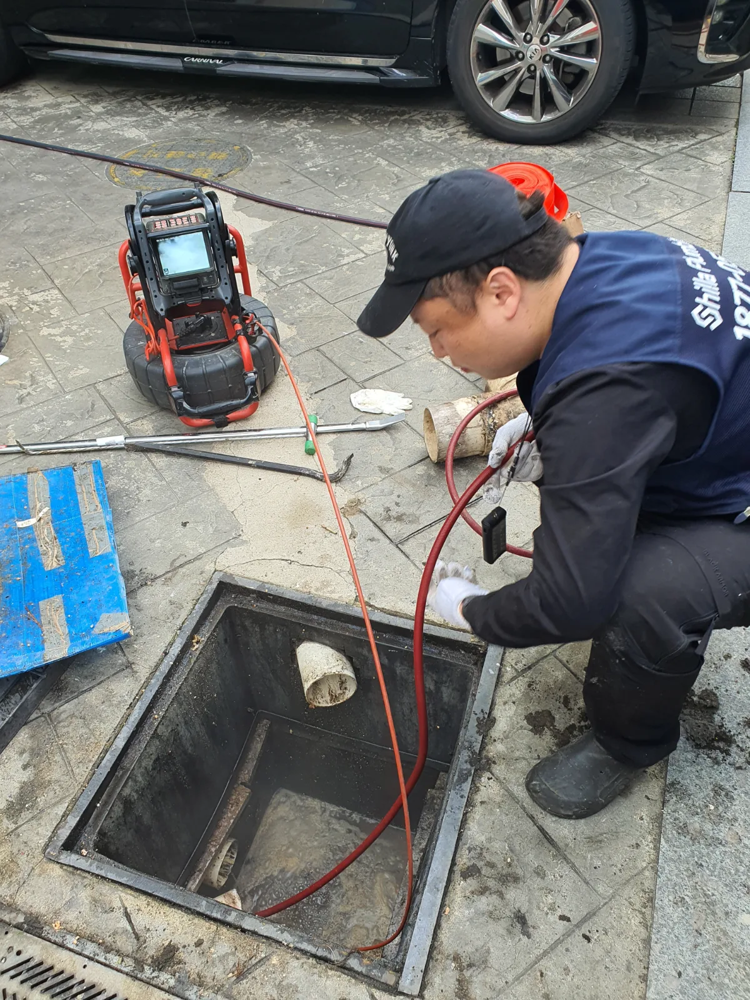

송파구 삼전동 하수구막힘, 현장 도착 후 진단
서울 송파구 삼전동에서 하수구막힘을 점검한 결과 공용배관 쪽에 문제가 있는 현장이었습니다. 신라건축설비는 막힘이 나타난 곳만 살피는 데 그치지 않고 공용라인을 확인하기 위해 집수정을 열었습니다. 여러 배수 흐름이 이어지는 구간에서는 눈앞의 배수구와 실제 막힌 위치가 다를 수 있어, 어느 배관을 작업해야 하는지 구분하는 과정이 필요합니다.
이번 삼전동 하수구막힘은 집수정에서 연결 배관에 접근할 수 있었습니다. 덮개를 열고 공용라인 쪽으로 배관내시경을 넣어 내부를 살폈으며, 이후 세척 장비를 투입할 출수구를 찾았습니다. 현장 사진에는 집수정 안쪽으로 이어진 배관 입구와 작업 호스가 보입니다. 이렇게 접근할 수 있는 지점을 확인한 뒤 그 위치를 기준으로 작업 방향을 정했습니다.
공용배관 하수구막힘은 개별 배수구의 입구 청소만으로 해결할 수 있는 문제와 작업 범위가 다릅니다. 이번 현장의 핵심도 공용라인 문제를 확인하고 출수구 쪽에서 막힌 구간으로 접근한 점입니다. 내시경으로 배관을 살핀 다음 역방향으로 고압세척을 진행하는 순서로 작업했습니다. 배관을 확인하는 단계와 세척하는 단계를 나눠 진행해 작업 위치를 분명히 했습니다.
1단계: 증상 확인과 필요한 장비 작업
집수정을 연 뒤에는 공용라인 쪽 배관에 내시경을 넣어 점검했습니다. 송파구 하수구막힘 현장에서 내시경을 사용한 목적은 눈으로 직접 볼 수 없는 배관 안쪽을 살피고, 공용배관 작업을 이어갈 지점을 파악하기 위해서였습니다. 집수정 안에는 배관이 드러나 있더라도 그 안쪽 상태까지 그대로 보이는 것은 아니므로 내부 점검이 필요했습니다.
배관 입구가 보인다는 것과 어느 방향으로 장비를 넣어야 하는지 아는 것은 다릅니다. 이번에는 공용라인을 살핀 뒤 출수구 쪽을 찾아 세척 진입 위치를 정했습니다. 배관에서 물이 나오는 쪽을 확인해야 그 지점에서 안쪽으로 접근하는 작업을 계획할 수 있습니다. 집수정과 연결 배관을 함께 살펴본 이유도 단순히 덮개를 여는 데 있는 것이 아니라 실제로 사용할 작업 경로를 찾는 데 있었습니다.
삼전동 하수구막힘 작업 사진에는 내시경 장비와 집수정으로 이어지는 케이블, 세척 호스를 다루는 모습이 담겨 있습니다. 장비마다 역할은 다릅니다. 내시경은 공용배관 내부를 확인하는 데 사용하고, 고압세척은 확인한 배관의 막힘을 처리하는 데 사용했습니다. 점검으로 찾은 출수구를 통해 다음 작업을 진행했으며, 현장 구조에 맞춰 접근 방향을 선택했습니다.

2단계: 원인 구간 처리와 정상 작동 확인
출수구를 찾은 다음에는 그쪽에서 배관 안으로 고압세척 호스를 넣었습니다. 이번 하수구막힘은 평소 물이 나오는 출수구 쪽에서 거슬러 들어가는 역방향 접근으로 처리했습니다. 물이 흐르는 방향을 반대로 바꾼다는 뜻이 아니라, 세척 장비를 넣는 위치와 진행 방향을 출수구 기준으로 잡았다는 의미입니다. 집수정에서 확보한 접근 지점을 활용한 작업입니다.
공용배관 고압세척은 물의 압력을 이용해 막힌 구간을 세척하는 방식입니다. 이번 현장에서는 내부 점검에 이어 출수구로 호스를 투입해 공용라인을 작업했습니다. 배관 입구 주변만 씻는 작업과 달리 배관 안쪽으로 접근해 막힘을 처리했습니다. 사진에서도 집수정 내부 배관으로 들어간 호스를 볼 수 있어 실제 세척이 어느 지점에서 진행됐는지 확인할 수 있습니다.
송파구 삼전동 하수구막힘을 해결하는 데에는 장비 선택과 함께 접근 위치를 찾는 과정이 중요했습니다. 공용라인 문제가 확인됐기 때문에 해당 구간으로 들어갈 수 있는 출수구를 찾았고, 그 위치에서 역방향 고압세척을 진행했습니다. 모든 현장을 같은 입구나 같은 방향으로 작업하는 것은 아닙니다. 배관이 연결된 상태와 접근 가능한 지점에 맞춰 작업 경로를 정해야 합니다.

작업 결과와 재발 방지 안내
이번 삼전동 하수구막힘은 집수정 개방, 공용라인 내시경 점검, 출수구 확인, 역방향 고압세척 순서로 해결했습니다. 처음 확인한 공용배관 문제에 맞춰 점검 범위를 잡고, 세척 호스를 넣을 위치를 찾아 작업을 이어간 사례입니다. 건물 내부의 배수 불편이 있어도 실제 작업 지점은 외부 집수정이나 연결된 공용라인이 될 수 있다는 점을 보여줍니다.
공용배관 하수구막힘이 의심될 때에는 어느 배수구에서 증상이 나타나는지와 다른 곳에서도 비슷한 문제가 있는지 함께 살펴보면 좋습니다. 여러 곳의 증상이 있다는 사실만으로 원인을 확정할 수는 없지만, 점검 범위를 정할 때 참고할 수 있습니다. 하수구가 막혔을 때에는 물 사용을 줄이고 현재 배수 상태를 알려주세요. 개별 배수구를 반복해서 청소해도 문제가 이어진다면 연결된 공용배관까지 확인할 필요가 있습니다.
평소에는 음식물이나 기름, 물에 풀리지 않는 이물질을 배수구에 버리지 않도록 관리하는 것이 좋습니다. 집수정 주변에는 점검과 작업에 방해가 되는 물건을 쌓아두지 않는 것도 도움이 됩니다. 송파구 삼전동에서 하수구뚫는업체에 상담하실 때 집수정 위치를 알고 계시면 함께 말씀해주세요. 신라건축설비는 이번 하수구막힘처럼 공용라인을 점검하고 현장에 맞는 접근 지점과 작업방법을 선택해 처리합니다.
최종 조치: 공용배관의 출수구를 찾아 역방향으로 고압세척을 진행하고 막힘을 해결했습니다.
현장 방문 전 확인하는 비용과 작업 범위
신라건축설비는 현장 증상과 배관 구조를 확인한 뒤 필요한 작업과 예상 비용을 안내합니다. 단순 관통으로 해결되는지, 배관내시경·석션·고압세척 또는 추가 장비가 필요한지는 현장 상태에 따라 달라집니다. 출장비와 야간 작업비, 추가 장비 비용이 발생할 수 있는 경우 작업 전에 먼저 설명하고 동의를 받은 범위에서 진행합니다.
업체를 선택할 때 확인할 사항
무조건적인 ‘0원’ 표현보다 실제 작업 범위, 추가 비용 조건, 사용 장비와 사후 대응 기준을 확인하는 것이 중요합니다. 해결되지 않았을 때의 비용 기준과 작업 후 동일 증상 발생 시 점검 범위를 사전에 문의해두면 불필요한 분쟁을 줄일 수 있습니다.
송파구 하수구막힘 자주 묻는 질문
하수구막힘은 왜 반복되나요?
송파구 삼전동 현장처럼 송파구 삼전동 현장에서 배수가 막혀 점검한 결과 공용배관 쪽 문제가 확인됐습니다. 증상은 원인이 현장마다 다를 수 있습니다. 배관 내부 기름 슬러지·생활 오염물·스케일이 충분히 제거되지 않았거나 오수관·공용배관 구간에 문제가 있으면 반복될 수 있습니다. 재발 시 막힌 위치와 배관 상태를 함께 확인합니다.
하수구가 역류하거나 물이 안 내려가면 하수구뚫는업체를 불러야 하나요?
바닥 배수구가 역류하거나 여러 배수구에서 동시에 물이 빠지지 않으면 단순 배수구 막힘보다 깊은 배관이나 공용배관 문제일 수 있습니다. 전문 장비로 원인 구간을 확인하는 것이 좋습니다.
여러 배수구가 동시에 막히면 공용배관이나 오수관 문제인가요?
동시에 여러 곳에서 배수 불량과 역류가 발생하면 메인배관·오수관·공용배관을 의심할 수 있지만 건물 구조마다 다릅니다. 배관내시경과 현장 진단으로 구간을 구분합니다.
하수구뚫는업체는 어떤 장비로 작업하나요?
현장에 따라 샤프트, 석션, 배관내시경, 고압세척 장비 등을 사용합니다. 단순 관통이 필요한지 배관 내부 세척까지 필요한지는 오염 상태와 막힘 원인에 따라 판단합니다.
하수구 고압세척은 언제 필요한가요?
기름 슬러지나 배관 내부 오염이 넓게 쌓여 반복 막힘이 생기는 경우 고압세척이 효과적일 수 있습니다. 모든 하수구막힘에 고압세척을 적용하는 것은 아니며 먼저 배관 상태를 확인합니다.
하수구막힘 비용은 어떻게 정해지나요?
막힌 위치, 배관 길이와 구경, 공용배관 여부, 내시경·샤프트·고압세척 등 장비 투입 범위에 따라 달라집니다. 추가 작업이 필요한 경우 진행 전에 범위와 비용을 안내합니다.
하수구막힘 서울·경기 출동지역
신라건축설비는 송파구 삼전동 현장을 포함해 서울 25개 구와 경기도 31개 시·군의 배관 문제를 상담합니다. 현장 거리와 기사 배정 상황에 따라 출동 가능 여부를 먼저 안내드립니다.
서울 전 지역
강남구 · 강동구 · 강북구 · 강서구 · 관악구 · 광진구 · 구로구 · 금천구 · 노원구 · 도봉구 · 동대문구 · 동작구 · 마포구 · 서대문구 · 서초구 · 성동구 · 성북구 · 송파구 · 양천구 · 영등포구 · 용산구 · 은평구 · 종로구 · 중구 · 중랑구
경기도 주요 출동지역
수원시 · 용인시 · 고양시 · 화성시 · 성남시 · 부천시 · 남양주시 · 안산시 · 평택시 · 안양시 · 시흥시 · 파주시 · 김포시 · 의정부시 · 광주시 · 하남시 · 광명시 · 군포시 · 양주시 · 오산시 · 이천시 · 안성시 · 구리시 · 의왕시 · 포천시 · 양평군 · 여주시 · 동두천시 · 과천시 · 가평군 · 연천군